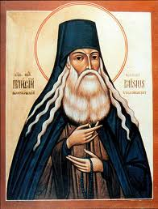

Официальный раскол ( великая схизма ) церкви на католическую на Западе с центром в Риме и православную на Востоке с центром в Константинополе произошел в 1054 году. Историки до сих пор не могут прийти к единству во мнении относительно его причин. Одни считают главной предпосылкой разрыва претензии Константинопольского патриарха на главенство в христианской церкви. Другие - стремление Папы подчинить своей власти церкви Южной Италии.
Исторические же предпосылки схизмы восходят своими корнями к IV веку, когда у Римcкой империи, государственной религией которой стало христианство, появилась вторая столица – Константинополь (ныне Стамбул). Географическая отдаленность друг от друга двух политических и духовных центров – Константинополя и Рима – привели к появлению обрядовых и догматических различий между церквями запада и востока империи, которые со временем не могли не привести к поиску истины и борьбе за лидерство.
Разрыв был закреплен военными действиями, когда в 1204 году в 4-м крестовом походе папства крестоносцами был разгромлен Константинополь. Раскол не преодолён до сих пор, хотя в 1965 году взаимные проклятия были сняты.
Второй сопоставимый по масштабу раскол начался в церкви, когда верующие стали переводить на родные языки Библию и возвращаться к первоапостольским истокам, отказываясь от доктрин государственных церквей, противоречащих Священному Писанию и дополненных к нему. Необходимо отметить, что долгое время в значительной части церквей использовался лишь латинский текст Библии. А в 1231 году Папа Григорий IX своей буллой запретил мирянам западной церкви чтение Священного Писания на любом языке, что было официально отменено лишь Вторым Ватиканским собором 1962-1965 гг. Несмотря на запрет, в более прогрессивной Европе перевод Библии на родные понятные простым людям языки начался в XVI веке.
В 1526 г. Шпейерский рейхстаг по требованию немецких князей принял постановление о праве каждого немецкого князя выбирать религию для себя и своих подданных. Однако 2-й Шпейерский рейхстаг в 1529 г. отменил это постановление. В ответ от пяти князей имперских городов Германии последовал протест, от чего и произошел термин «протестантизм» (лат. protestans, род. п. protestantis - публично доказывающий). Так, новые церкви, вышедшие из лона господствующих конфессий, получили название – протестантские. Теперь протестантизм является одним из трех, наряду с католицизмом и православием, главных направлений христианства.
Внутри протестантства много конфессий, которые в основном расходятся в толковании каких-либо текстов Библии, не затрагивающих основного принципа спасения во Христе. В целом же значительная часть этих церквей дружны между собой и едины в главном – не признают главенства папы и верховных патриархов. Многие протестантские церкви руководствуются принципом «Sola Scriptura» (лат. «только Писание»).
Что касается России, то русская православная церковь не допускала перевода Библии на понятный простым людям язык вплоть до XIX века. Синодальный перевод Священного Писания с церковнославянского на русский был осуществлен на Руси лишь в 1876 году. До сих пор им пользуются русскоговорящие верующие большинства христианских конфессий.
По сведениям агентства «Операция мир», по всему миру насчитывается около 943 миллионов католиков, 720 миллионов протестантов и 211 миллионов православных («Операция мир», 2001 г.).
Существуют страны, в которых преобладают те или иные конфессии. На сайте www.adherents.com, специализирующемся на статистических данных о религиях мира, приводятся следующие данные. Более 50% населения католики составляют в Италии, Франции, Испании, Ирландии, Мексике, Польше, Канаде, Аргентине, Португалии, Австрии, Ватикане, Бельгии, Боливии, Колумбии, на Кубе; православные – в России, Армении, Беларуси, Болгарии, Грузии, Греции, Македонии, Молдове, Румынии, Сербии и Черногории, Украине, на Кипре; протестанты – в США, Великобритании, Дании, Финляндии, Гренландии, Исландии, Норвегии, Швеции, Новой Зеландии, Самоа, Намибии, ЮАР, на Ямайке, Таити.
Однако все эти цифры не совсем корректно отображают действительность. На самом деле, протестантов может оказаться даже больше, чем вместе православных и католиков. Ведь число верующих, реально исповедующих в своей повседневной жизни православие и католицизм, намного меньше, чем число тех, кто заявляет о принадлежности к этим конфессиям. Я имею в виду, что значительная часть протестантов знают во что верят. Они могут объяснить, почему они протестанты и принадлежат к той или иной церкви. Они читают Библию, посещают богослужения. А большинство католиков и православных в церковь заглядывают изредка, при этом вообще не знают Библию и даже не понимают, чем доктринально отличается католицизм, православие и протестантизм. Такие верующие просто считают себя католиками или православными по церкви, где были крещены, то есть по месту проживания или по вере родителей. Они не могут заявить, что стали католиками или православными, потому что знают, полностью разделяют и принимают доктрины их церкви. Они не могут сказать, что прочитали Библию и уверены в соответствии догматов их церкви учению Священного Писания.
Таким образом, большинство католиков и православных не являются ими, так как не знают доктрин своих церквей и не воплощают их в жизни. Это подтверждается результатами многих социологических опросов. Так по данным Всероссийского Центра Изучения Общественного Мнения (ВЦИОМ), полученным весной 2009 года, только 4% из респондентов, относящих себя к православию, принимают таинства, 3% молятся так, как предписывает церковь. Результаты исследования ВЦИОМ, проведенного весной 2008 года, показали, что лишь 3% православных полностью соблюдают Великий пост. Опрос населения, проведенный Фондом «Общественное мнение» (ФОМ) весной 2008 года, показал, что только 10% православных не реже раза в месяц ходят в храм. По данным, полученным в 2006 году сектором социологии религии Института социально-политических исследований Российской академии наук (ИСПИ РАН), 72% россиян, относящих себя к православным христианам, Евангелие вообще не брали в руки или читали когда-то давно!
К сожалению, в настоящее время в России, Украине, Беларуси и других странах бывшего СССР по отношению к протестантским конфессиям зачастую преднамеренно формируется имидж тоталитарных сект. Между тем протестантство – это огромнейшие церкви с многовековой историей и многомиллионной паствой, красивые молитвенные дома и храмы, зрелищное богослужение, внушительный труд на миссионерском и социальном поле и т.д. Как было сказано выше, к странам с преобладанием протестантизма относятся Швеция, США, Великобритания, Дания, Финляндия, Гренландия, Исландия, Норвегия..., то есть, наиболее развитые в экономическом и социальном отношении государства. Меньше половины, но больше 20% населения, протестанты составляют в Германии, Латвии, Эстонии, Венгрии, Шотландии, Швейцарии, Австралии, Канаде, Гватемале и других странах.